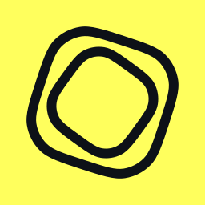
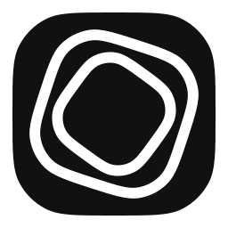
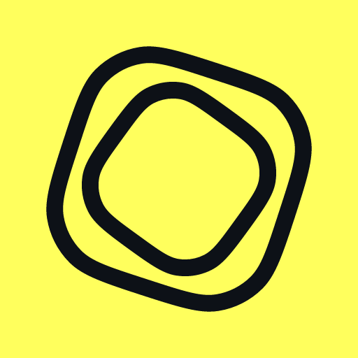

The foundry
The signature scene: dithered to the palette, one pixel per three device pixels. Move the pointer over it; the threads part.
The stream
The foundry's threads, flowing for real around glyphs made of the planet's matter: fctl.sh's and the app's 404 and 5xx pages. Stir the threads, throw a glyph, tap for a burst, turn the wind off. Full screen
Marks
hyperstructure's symbol (Twist), as on GitHub and on any background, and fctl's mark: the symbol on a rounded square. App icons that the platform shapes (home screens, the Dock) fill the square; here in Android's circle.



Orbs
A session's orb, in each state.
Palette
Tokens in this theme
Type
Agents that build while you sleep.
Agents that build
Made for the long run.
Three steps from a spare Mac
Body text is Inter at 16 pixels with a 1.65 line height. Inter's optical sizes give large text its Display cut automatically.
JetBrains Mono — curl -fsSL https://fctl.sh/install | sh
Small mono labels · macOS · Linux